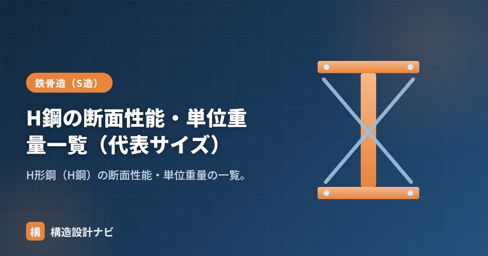

H鋼の断面性能・単位重量一覧（代表サイズ）

H形鋼の設計では、部材の強さ・変形しにくさを表す断面性能（断面積・断面二次モーメント・断面係数）と、材料費・搬入計画に関わる単位重量を使います。断面性能は形状だけで決まる値のため、電卓を使わずとも形鋼表を引けば即座に把握できるのが特徴です。ここでは代表的なサイズの値を早見表にまとめ、あわせて数値の見方や使い方も解説します。
- H形鋼の断面性能はサイズごとに形鋼表で決まっている
- 細幅は強軸Ixが大きく梁向き、広幅は弱軸Iyも大きく柱向き
- 単位重量は断面積×0.785でおおよそ求められる
細幅H形鋼（梁向き）
| 呼称（mm） | 単位重量 (kg/m) | 断面積 A(cm²) | Ix (cm⁴) | Zx (cm³) | Iy (cm⁴) | Zy (cm³) |
|---|---|---|---|---|---|---|
| H-200×100×5.5×8 | 21.3 | 27.2 | 1840 | 184 | 134 | 26.8 |
| H-300×150×6.5×9 | 36.7 | 46.8 | 7210 | 481 | 508 | 67.7 |
| H-400×200×8×13 | 66.0 | 84.1 | 23700 | 1190 | 1740 | 174 |
| H-500×200×10×16 | 89.6 | 114 | 47800 | 1910 | 2140 | 214 |
| H-600×200×11×17 | 106 | 135 | 77600 | 2590 | 2280 | 228 |
広幅H形鋼（柱向き）
| 呼称（mm） | 単位重量 (kg/m) | 断面積 A(cm²) | Ix (cm⁴) | Zx (cm³) | Iy (cm⁴) | Zy (cm³) |
|---|---|---|---|---|---|---|
| H-200×200×8×12 | 49.9 | 63.5 | 4720 | 472 | 1600 | 160 |
| H-300×300×10×15 | 94.0 | 120 | 20400 | 1360 | 6750 | 450 |
| H-400×400×13×21 | 172 | 219 | 66600 | 3330 | 22400 | 1120 |
広幅は弱軸の Iy・Zy が大きく、2方向からの曲げを受ける柱に向きます。細幅は Ix が大きく、強軸で曲げを受ける梁に向きます（→広幅・中幅・細幅）。
単位重量（kg/m）は 断面積A(cm²) × 0.785 でおおよそ求められます（鋼の密度7.85g/cm³より）。計算方法は「H形鋼の重量の計算方法」を参照。
早見表の見方
表中の記号は、A（断面積）が重量や軸力の検討、Ix・Zx（強軸まわりの断面二次モーメント・断面係数）が梁のたわみ・曲げ強度の検討、Iy・Zy（弱軸まわりの値）が柱の2方向の曲げや横座屈の検討に使われます。たとえば「H-400×200×8×13」を梁として使う場合、まず必要な曲げ耐力からZxの目安を求め、早見表からZxがそれ以上となるサイズを選ぶ、という手順で断面選定を行います。同じせいでもフランジ厚が厚いシリーズほどA・I・Zが大きくなる点も、表を横に見比べると分かりやすくなります。
早見表の数値はJISの改正やメーカーによって細部が異なることがあります。実際の断面選定・積算では、必ず最新の形鋼表・鋼材ハンドブックの値を用いてください。
早見表を渡すたびに念を押しているのが、掲載値をそのまま仕様書に転記しないでほしいということです。JISの改正やメーカーの違いで数値が微妙に変わることがあるため、断面決定の最終段階では必ず最新の形鋼表で裏を取るようにしています。
断面性能の記号の意味（図解）
単位重量の使い方
| 用途 | 計算 |
|---|---|
| 鉄骨の自重 | 単位重量（kg/m）× 部材長さ（m）＝ その部材の重量 |
| 数量拾い・積算 | 全部材の重量を合計 → 鉄骨のトン数（材料費の基礎） |
| 揚重計画 | 1本あたりの重量からクレーンの能力・台数を決める |
| 荷重拾い | 床の固定荷重に鉄骨の重量を加算する |
重量 ＝ 66.0 × 8 ＝ 528 kg（約0.53トン）
単位重量は断面積 × 鋼材の密度（7.85 g/cm³）で計算できます。H-400×200×8×13なら、断面積84.1cm² × 7.85 ÷ 1000 × 100 ≒ 66.0kg/m となり、形鋼表の値と一致します。表がない場合でも、断面積がわかれば自分で計算できます。
鉄骨造の工事費は、鉄骨のトン数にほぼ比例します。そのため、断面を1サイズ落とせるかどうかが、コストに直接跳ね返ります。設計段階で「この梁をH-400からH-390に変えると何トン減るか」を単位重量から即座に見積もれると、コスト意識のある断面計画ができます。ただし、部材の種類を増やしすぎると製作・管理の手間が増えるため、ある程度は統一するほうが有利な場合もあります。
よくある質問
Q1. 形鋼表はどこで入手できますか？
鋼材メーカーや商社のウェブサイト、日本鉄鋼連盟の資料、建築構造の設計資料集などに掲載されています。また、JIS G 3192（熱間圧延形鋼）に寸法・断面積・単位質量・断面性能が規定されています。実務では、構造設計者は手元に形鋼表を常備しており、断面の検討時に頻繁に参照します。近年はウェブ上の計算ツールも利用されています。
Q2. 断面性能は自分で計算する必要がありますか？
JIS規格品であれば形鋼表から読み取れるため、通常は計算しません。ただし、ビルドH（溶接組立H形鋼）のように規格外の断面を使う場合や、補強プレートを追加した断面では自分で計算する必要があります。その場合は、長方形の集合として分解し、平行軸の定理を使って合成します。
Q3. 同じせいでも断面性能が違うのはなぜですか？
フランジ幅と板厚が異なるためです。たとえばH-400×200×8×13とH-400×400×13×21では、せいは同じ400mmでも、後者はフランジが幅広く厚いため、断面積・断面二次モーメントともに大幅に大きくなります。細幅・中幅・広幅という系列の違いがこれにあたり、用途（梁向き・柱向き）に応じて選択します。
まとめ
- H形鋼は単位重量・A・Ix・Zx・Iy・Zy を形鋼表で確認して設計に使う。
- 細幅は強軸Ixが大きく梁向き、広幅は弱軸Iyも大きく柱向き。
- 断面選定は必要耐力からZxなどの目安を求め、表から満たすサイズを選ぶ。
- 単位重量は断面積×0.785でおおよそ求められる。正確な値はJIS・形鋼表で。